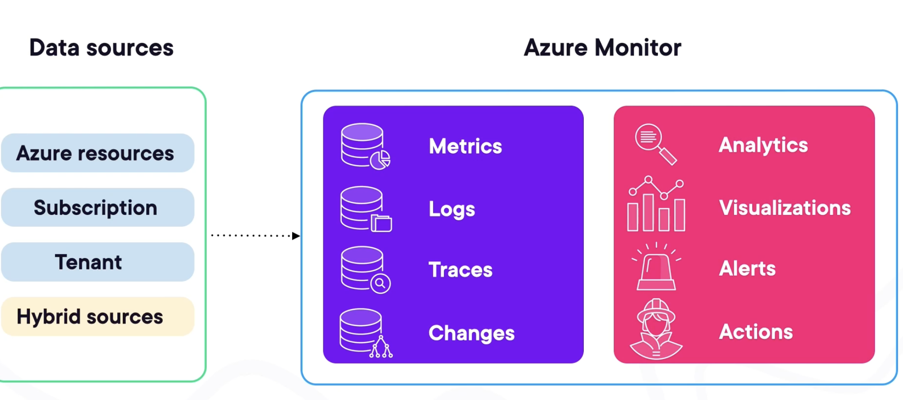
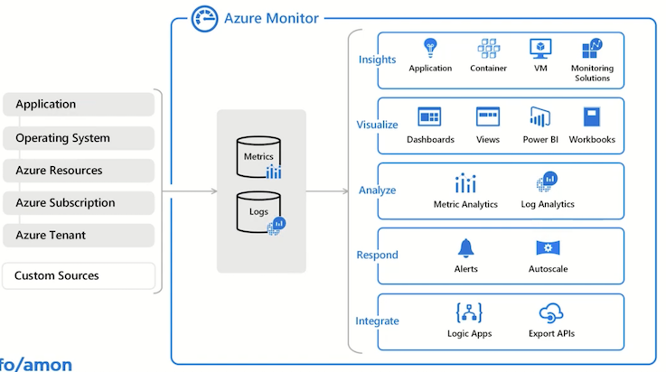
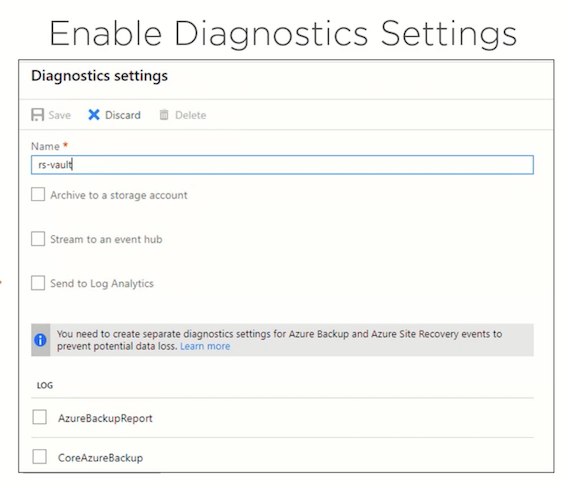
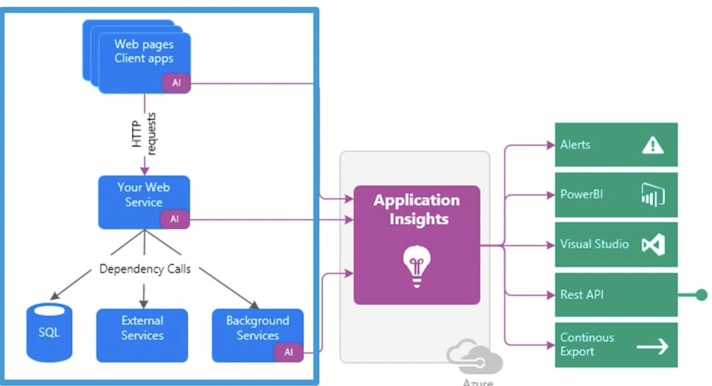
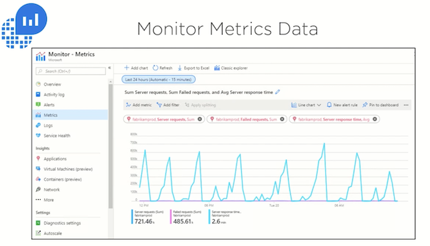
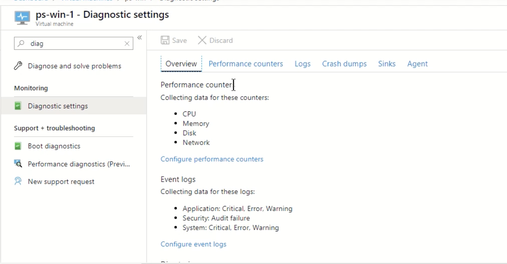
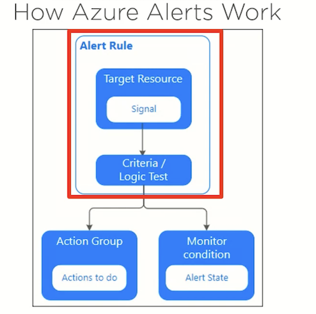
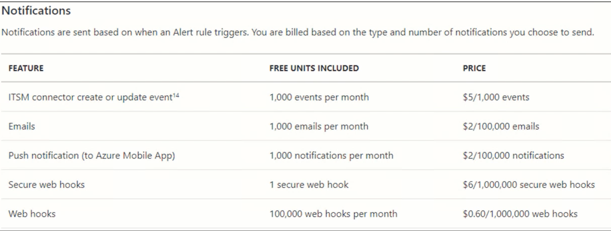
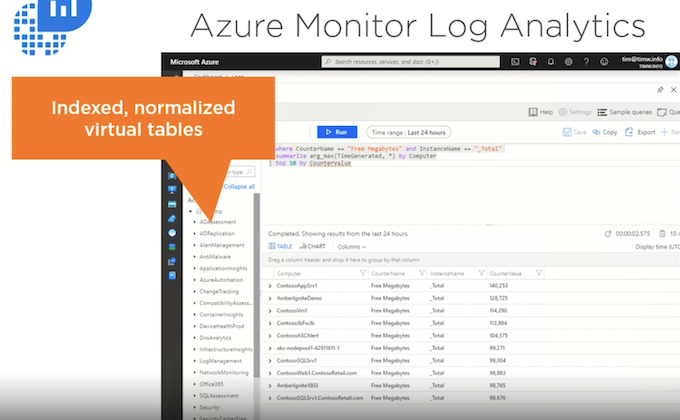
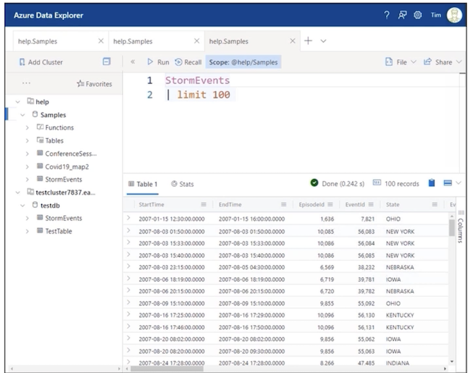

2 Monitoring Microsoft Azure Resources and Workloads
2 Azure Monitoring Fundamentals
1-1 Collecting Data with Azure Monitor
Here's a concise summary of the Azure Monitor data collection article:
- Diverse Data Sources: Azure Monitor collects data from numerous sources including:
- Azure resources (VMs, SQL DB, networks, etc.)
- Applications (custom apps, OS info from VMs)
- Azure Subscription (health/availability)
- Azure Tenant (e.g., Microsoft Entra ID)
- Hybrid environments (e.g., on-prem SQL with Azure agents)

- Primary Data Types:
- Metrics: Numerical time-series data for real-time/short-term performance monitoring (e.g., CPU%, disk I/O, memory pressure).
- Logs: Detailed event/activity records (e.g., security logs, application logs, Windows/Linux system logs, resource state changes).
- Traces: Data for tracking request flows in distributed applications (e.g., via Application Insights).
- Changes: Tracks modifications to Azure resources over time.
Focus: The article (and course) emphasizes Metrics (real-time performance) and Logs (detailed troubleshooting) as the most common and impactful data types.
- Enabling Collection:
- Automatic: Basic data collection starts immediately when an Azure resource is created.
- Enhanced Setup: Requires configuration for deeper insights:
- Enable diagnostic logging on resources (e.g., Azure SQL DB).
- Install Azure Monitor agents on VMs.
- Use the Data Collector API to send data from custom applications (web apps, functions, mobile apps).
1-2 Taking Action on Azure Monitor Data
1. Data Analysis Tools
- Metrics Explorer: Visualizes real-time numerical data (CPU%, memory, disk I/O) via charts to track performance trends and set threshold-based alerts.
- Log Analytics: Performs deep investigation using Kusto Query Language (KQL) or a point-and-click interface. Combines logs (Windows events, Linux syslogs, errors) for troubleshooting complex issues.
- Key Difference:
- Metrics: Real-time resource health (automatic collection).
- Logs: Detailed event analysis (may require setup like Log Analytics workspace).
Analytics
Metrics Explorer： Create charts, analyze trends, and identify fluctuations in metric values
Log Analytics： Detailed log investigation and custom queries for in-depth troubleshooting
Analytics Use Cases
Metrics Explorer
- Real-time performance monitoring
- Metrics like CPU, memory, disk
- Threshold-based alerts
- Quick visual overview
- Immediately collected
Log Analytics
- Deep analysis
- Multiple log types and sources
- Tracking event or error patterns
- Powerful KQL queries
- Requires steps to enable
2. Visualization Options
-
Dashboards: Static, high-level view of multiple resources in one place
- Static views in Azure portal showing metrics, logs, or insights. Ideal for quick team sharing.
-
Workbooks: A flexible tool for dynamically interacting with data
- Interactive reports combining multiple datasets for real-time analysis and deep troubleshooting.
-
Power BI: Business analytics service for advanced reporting
- Advanced business reporting (e.g., executive dashboards), integrates external data, and automates updates.
-
Grafana: Open-source dashboard platform
- Open-source dashboards for multi-cloud monitoring (AWS/GCP) and third-party tools (Dynatrace, New Relic).
Analytics Use Cases
- Dashboards: View real-time resource health in the Azure portal
- Workbooks： Investigate performance trends and troubleshoot issues
- Power BI： Executive reports or sharing business insights outside Azure
- Grafana Unified monitoring across cloud platforms and external tool
3. Automated Actions & Alerts
- Alerts: Trigger notifications (email/SMS/webhooks) based on metric thresholds or log patterns.
- Autoscaling: Dynamically adjusts resources (e.g., VMs) to optimize performance/cost.
- AIOps: Automates anomaly detection and issue resolution.
- Insights: Microsoft’s pre-built monitoring experiences for key services (e.g., VMs, containers, networks).
Key Takeaways
- Act on Data: Tools transform raw data into actionable insights (e.g., autoscaling from CPU metrics).
- Visualization Fit:
- Dashboards → Quick health checks
- Workbooks → Interactive analysis
- Power BI/Grafana → Cross-platform or executive reporting
- Automation: Alerts and AIOps enable proactive responses to issues.
- Start with Insights: Microsoft-curated templates accelerate monitoring setup.
💡 Core Value: Azure Monitor closes the loop from data collection → analysis → visualization → automated action.
1-4 Demo: Configuring Alerts and Notifications
🔔 Alert Creation Methods
- Portal Setup (GUI):
- Created Action Group (
pstestgroup) with email notifications. - Defined an alert rule (
Cpu80Percent) for a VM (pstest1):- Condition:
Max CPU > 80%over 1 minute. - Severity: Warning.
- Condition:
-
Enabled email notifications via the action group.
-
CLI Method (Azure Cloud Shell):
- Used
az monitor metrics alert createto create an alert for another VM (pstest2):- Condition:
CPU > 40%. - Severity: Informational (level 3).
- Condition:
az monitor metrics alert create -n "Cpu40Percent" --resource-group "1-b4e6871e-playground-sandbox" --scopes $VMID --condition
"max percentage CPU > 40" --description "Virtual machine is running at or greater than 40% CPU utilization" --evaluation-frequency 1m —-window-size 1m -- severity 3
⚡ Alert Verification
- Ran a load-generation script to trigger alerts.
- Results:
- Both alerts fired:
CPU > 40%(pstest2) andCPU > 80%(pstest1). - Email received for the 80% alert (configured via action group).
- Incident details showed:
- CPU progression graphs.
- Options to update incident status (New/Acknowledged/Closed).
Demo: Analyzing with Azure Monitor Logs 💡 Key Takeaways
- Action Groups: Centralize notifications (email/SMS) for reuse across alerts.
- Flexible Configuration: Use GUI (portal) for one-off setups or CLI (
az) for automation/scaling. - Real-Time Response: Alerts provide:
- Immediate visibility into thresholds (e.g., CPU spikes).
- Contextual data for troubleshooting.
- Notifications to streamline team response.
1-5 Demo: Analyzing with Azure Monitor Logs
Here's a concise summary of the Azure Monitor Logs analysis demo:
🔍 Three Approaches to Log Analysis
-
Pre-Built Queries (Zero-Code):
-
Accessed via Queries Hub (scoped to resources like VMs).
- Example: "Heartbeat" query to verify VM connectivity (
pstest1,pstest2). -
Instantly shows key details: computer name, IP, last check-in time.
-
Simple Mode (Point-and-Click GUI):
- Visually build queries using filters:
- Start with table (e.g.,
Eventfor Windows logs). - Add filters:
Source → EventLog→ Specific computer (e.g.,pstest1).
- Start with table (e.g.,
-
No KQL knowledge needed – ideal for quick ad-hoc analysis.
-
KQL Mode (Advanced Custom Queries):
-
Write Kusto Query Language scripts for deep investigation.
- Example query:
kql Event | where EventLog == "Security" | where EventID == 4625 - Use Case: Track failed logins (
EventID 4625) across all VMs, revealing details like attacker account names (e.g.,fakeuser2).
💡 Key Workflow Insights
- Scope First: Start by selecting a resource group/VM to target analysis.
- Progress from Simple → Advanced:
- Pre-built queries → GUI filtering → Custom KQL.
- KQL Advantages:
- SQL-like syntax (familiar for many users).
- Enables complex cross-VM correlation (e.g., security threat hunting).
- Unified Interface: All approaches accessible in the same Log Analytics workspace.
🚀 Getting Started Tips
- New Users: Leverage pre-built queries + Simple mode to avoid syntax barriers.
- Security/Admin Teams: Use KQL to audit events (e.g., failed logins, resource access).
- Troubleshooting: Combine log types (application/security/system) for root-cause analysis.
Demo Outcome: From verifying VM health to investigating security events, Azure Monitor Logs adapts to user expertise—delivering value immediately. 🕵️♂️
2 Monitoring Microsoft Azure Resources and Workloads
2-1 Introducing Azure Diagnostics Monitoring
Here's a concise summary of the Azure diagnostics monitoring concepts:

⚕️ Service Health & Resource Health
- Purpose: Personalized view of Azure platform issues affecting your resources (e.g., Microsoft-side outages).
- Key Features:
- World map showing regional service status.
- Historical issue tracking (resolved incidents).
- Determines if problems are Azure-related (vs. your configuration).
- Use Case: "Sanity check" before troubleshooting internal issues.
📊 Two Core Monitoring Streams
-
Metrics
-
What: Numerical time-series data (sampled periodically).
- Examples:
- Infrastructure: VM CPU%, disk space, network I/O.
- Apps: HTTP errors, request rates.
-
Analysis Tools: Metrics Explorer, dashboards, alerts.
-
Logs
-
What: Event-based records (discrete occurrences).
- Types:
- Activity Log: Subscription-level control-plane audits (e.g., "VM deleted").
- Diagnostic Logs: Resource-level data-plane events (e.g., VM guest OS logs).
- Storage:
- Metrics → Tables
- Logs → Blobs (e.g., IIS logs) or Log Analytics.
- Analysis Tools: Log Analytics, KQL queries.
⚙️ Enabling Diagnostics
- Data Capture: Send both metrics and logs to:
- Azure Storage (tables/blobs).
- Log Analytics workspace.
- Event Hubs (streaming).
- Guest OS Monitoring: Enable for VMs to collect:
- Performance counters (CPU/memory).
- IIS/application logs.
- System event logs.
🎯 Monitoring Goals
- Break/Fix: Rapid incident response.
- Optimization: Performance tuning (e.g., scaling based on trends).
- Security: Detect anomalies/breaches.
- Proactive Management: Address issues before they impact users.
Key Insight: Azure diagnostics provide critical visibility despite no physical access to datacenters. Start by defining why you need monitoring (e.g., SLA compliance, cost control).
2-2 Enabling Azure Diagnostics Monitoring

Here's a concise summary of the Azure diagnostic settings configuration:
⚙️ Key Configuration Features
-
Flexible Setup
-
Create multiple diagnostic settings per resource.
- Configure most resources directly in Azure Monitor (except VM guest OS diagnostics, set at VM scope).
📤 Three Output Destinations
| Destination | Use Case |
|---|---|
| Storage Account | Long-term archival of raw logs/metrics (blobs/tables). |
| Event Hub | Real-time event streaming (handles millions of events); enables downstream processing (e.g., alerts, custom analytics). |
| Log Analytics | Advanced querying/analysis with KQL (Microsoft's recommended standard). |
💡 Critical Note: Outputs are not mutually exclusive – send data to multiple destinations simultaneously.
📊 Data Collection Options
-
Varies by Resource Type:
-
Some resources offer both logs + metrics (e.g., Azure SQL DB).
-
Others provide only metrics (e.g., Azure Load Balancer) or only logs (e.g., Azure Policy).
-
Selectable Categories: Choose specific log types/metrics to collect (e.g., audit logs, performance counters).
💡 Key Takeaway
Azure diagnostic settings offer centralized, customizable pipelines to route monitoring data where it’s needed – whether for compliance (storage), real-time ops (Event Hubs), or deep analysis (Log Analytics). Always verify supported data types per resource.
2-3 Azure Monitor Data Sources
Here's a concise summary of Azure Monitor's data layers and capabilities:
⚙️ Three Layers of Metrics Collection
Azure Monitor Metrics Data Sources
Platform metrics / Guest OS metrics / Application metrics / Custom metrics
-
Platform Metrics
-
Automatically collected baseline metrics (e.g., VM CPU%, network I/O).
-
Requires no configuration – available out-of-the-box.
-
Guest OS Metrics
-
Enriched via agents (Windows/Linux VMs):
- Performance counters (Windows)
- Syslogs (Linux)
- Windows Event Logs
-
Application Metrics
-
Via Application Insights (APM):
- HTTP requests, dependencies, performance issues
-
Custom metrics from application code
-
Custom metrics
| Tool | Purpose | Key Features |
|---|---|---|
| Metrics Explorer | Visualize platform/guest metrics | Multi-resource charts, baselining, alert creation |
| Log Analytics | Unify & analyze logs across resources | Kusto Query Language (KQL), normalized data tables |
| Application Insights | Monitor app performance (PaaS/IaaS) | End-to-end transaction tracing, instrumentation |
🔍 Log Analytics Backend: Built on Azure Data Explorer (ADE) – a scalable engine for log normalization/querying.
Monitor Log Data
Disparate data sources Log formats / VMs / Storage accounts
Azure Data Explorer
- Fast, highly scalable data exploration service
- Normalized data warehouse
- Kusto Query Language (KQL)
Log Analytics
- Based on ADE
- On-board VMs, storage accounts, diagnostic settings
App Insights

📈 Baselining & Proactive Monitoring
- Purpose: Establish performance norms to detect anomalies.
-
Workflow:
-
Collect continuous metrics/logs
- Define "normal" operational parameters (e.g., peak/valley trends)
- **Alert on deviations **
-
Trigger automated actions (e.g., scaling, notifications)
-
Critical Tip: Avoid over-instrumentation – start with critical baselines.

🔑 Key Distinctions
-
Log Analytics vs. Application Insights:
-
Log Analytics: Aggregates infrastructure/OS logs.
-
App Insights: Tracks application-layer performance (code-level).
-
KQL (Kusto Query Language): SQL-like syntax for cross-resource log queries.
💡 Pro Tip: Use Metrics Explorer for real-time resource health dashboards and Log Analytics/KQL for deep forensic analysis.
2-6 Demo: Configure Diagnostics Settings
⚙️ Enabling Diagnostics
-
Resource-Level Setup
-
Most Resources: Configure via Azure Monitor → Diagnostics settings
- Example: Network interface (
vm2-nic) enabled with: - Archival to storage account (
Contosodiag1) - Streaming to Event Hub (
pshub704/diagnostics) - Optional Log Analytics integration
- Resource Variations:
- Network interfaces → Metrics only
- NSGs → Logs only (network events/rule counters)
- Example: Network interface (

-
Virtual Machines (Special Case)
-
Enabled via VM blade → Diagnostics settings
- Installs Azure Diagnostics Extension (Windows/Linux):
- Windows: Performance counters, Event Logs, IIS logs
- Linux: Syslog, disk/CPU/memory metrics
- Requires running VM state for configuration
- Storage account mandatory for data retention
📊 Metrics Explorer Demo
- Plotting Metrics
- Scope: Select VM resource (
vm1) - Metric:
Percentage CPU(host-level) -
Customization:
- Aggregation (Avg/Min/Max)
- Time range (default 24h → adjustable)
- Chart types (line/bar/area)
-
Persistence Options
- Pin to dashboard: Real-time monitoring
- Copy link: Save chart configuration (avoids recreation)
💡 Key Insights
- Automatic Baseline Metrics: Collected for all resources (even without diagnostics)
- Agent-Dependent Data: Richer metrics (e.g., guest OS) require extension installation
- Resource Differences:
- VMs need per-instance configuration
- Non-VM resources use centralized Monitor settings
- Pro Tip: Use Chart Link Sharing to preserve complex metric views
Demo Workflow: Enabled diagnostics → Customized VM metrics → Visualized CPU usage → Saved chart for reuse.
2-7 Azure Monitor Log Search

⚡ Alert Rule Components
- Target Resources
- Monitored Azure resources (e.g., VMs, databases)
- Signals
- Trigger events (e.g., VM restart, CPU threshold breach)
- Logic/Condition
- Boolean criteria defining when to fire (e.g., "CPU > 80% for 5 minutes")
🛠️ Action Groups
- Reusable workflows triggered by alerts
- Actions beyond notifications:
- Run scripts (PowerShell/Python/C#) for auto-remediation (e.g., restart VM)
- Integrate with ITSM tools (ServiceNow, Jira)
- Notify via email/SMS/push/voice
- Trigger Azure Functions or Logic Apps
📊 Monitoring & Auditing
- Track alert states (fired/resolved)
- Audit trails for all actions
- Historical incident analysis
💰 Pricing
- Free tier:
- 1,000 email/push notifications monthly
- Beyond free tier:
- Low-cost per notification (check Azure Alerts Pricing)

💡 Key Value
- Proactive ops: Transform monitoring → automated response
- Unified platform: No need for custom notification systems
- Scalable: Handles enterprise workloads with pay-as-you-go model
Example: Auto-restart VMs when shutdowns occur, with audit logs and SMS alerts.
2-8 Azure Monitor Log Search
Here's a concise summary of Azure Monitor Log Analytics capabilities:
📊 Core Functionality
- Workspace Architecture
- Central Log Analytics workspace aggregates logs from all onboarded resources
-
Data automatically normalized/indexed into virtual tables with unified schema
-
Kusto Query Language (KQL)
- SQL-like syntax with Splunk/PowerShell similarities
- Dynamic query editor in Azure portal with live visualization toggle (tables ↔ charts)
🚀 Key Features
- Export & Integration
- Save/share queries across teams
- Export to CSV/Power BI for dashboards
- Trigger alerts from query results
- Pre-Built Solutions
- Azure Marketplace solutions (e.g., Activity Log Analytics)
- Centralized views across subscriptions
- Ready-made dashboards/visualizations
🔍 Activity Log Analytics Example
- Purpose: Unified control-plane auditing ("who did what when")
- Capabilities:
- Aggregate admin logs across multiple subscriptions
- Run cross-subscription KQL queries
- Pre-configured dashboards for access/change analysis
💡 Critical Value Propositions
- Schema Normalization
- Transforms disparate log formats into query-friendly tables
- Unified Operations
- Single pane for infrastructure/app/audit logs
- Extensible Ecosystem
- Marketplace solutions accelerate monitoring setup
- Proactive Alerting
- Convert log patterns into actionable triggers

Example Workflow: Onboard VMs → Query failed logins (KQL) → Visualize attack patterns → Automate security alerts.
2-9 Demo: Perform Log Searches
🛠️ Workspace Setup & Configuration
- Create Workspace:
- Foundation for log aggregation (e.g.,
ps-workspace). - Onboard Data Sources:
- Connect VMs, storage accounts, activity logs via Diagnostic Settings.
- Key constraint: A VM can link to only one workspace at a time.
- Install Log Analytics Agent:
- Automatically deployed when connecting VMs → streams OS/resource data to workspace.
🔌 Extending Capabilities with Solutions
- Azure Marketplace Solutions:
- Pre-built tools (e.g.,
AzureBackup,NetworkMonitoring) add specialized dashboards/queries. - Install via Solutions blade → enhances workspace functionality.
- Note: Each solution has its own pricing (check exercise files).
🔍 Querying with KQL (Kusto Query Language)
- Access Interfaces:
- Azure Portal: Built-in Logs interface.
- Query Playground: Microsoft-hosted sandbox (authenticate via Azure AD).
- Key Features:
- IntelliSense: Auto-complete for tables/commands (e.g.,
Perf,SecurityEvent). - Cross-Table Queries: Join data from multiple sources (e.g.,
search SecurityEvent | where ...). - Time Filters: Use
ago()for dynamic time ranges (e.g.,where TimeGenerated > ago(1h)). - Query Examples:
kql Perf | where TimeGenerated > ago(24h) | summarize count() by ObjectName, CounterNamekql SecurityEvent | where EventID == 4625 // Failed logins
search in (SecurityEvent) "Cryptographic"
take 10
Perf |
where TimeGenerated > ago (1h)
summarize count() by ObjectName, CounterName
// comments
SecurityEvent
| where Level == 8
| where EventID == 4672
Event
| where EventLog == "Application"
| where TimeGenerated > ago (24h)
| where RenderedDescription contains "cryptographic"
📊 Visualization & Export
- Dynamic Toggling: Switch between table/chart views based on query results.
- Export Options:
- CSV: For offline analysis.
- Power BI: Build live dashboards.
- Alerts: Trigger rules from query results.
- Saving/Sharing: Reuse queries across teams.
💡 Pro Tips
- Use Sample Queries: Built-in templates (e.g., "Computer performance") jumpstart analysis.
- Leverage Schema Pane: Explore tables/columns under LogManagement.
- Playground Advantage: Practice KQL safely using Microsoft’s demo data.
Demo Workflow: Created workspace → Onboarded VMs → Installed solutions → Ran KQL queries → Exported to CSV/Power BI.
Next Steps: Deepen KQL skills using exercise files/Pluralsight courses.
3 Monitoring Your Spend in Microsoft Azure
3-1 Get Estimated Azure Costs Pre-deployment
💰 Cost Estimation Tools
- Azure Pricing Calculator
- Web-based tool on azure.com for pre-deployment cost modeling
-
Supports most Azure services (VMs, databases, storage, etc.)
-
In-Portal Estimates
-
Real-time cost displays when configuring resources:
- VM size selection shows monthly estimates
- Azure SQL DB tiers show pricing during setup
-
Programmatic Access
- Consumption API: Track usage expenditures
- Rate Card API: Look up real-time pricing per service/region
🌍 Critical Regional Factors
- Price Variability: Costs differ by region due to:
- Local energy/operational expenses
- Infrastructure availability
- Service Limitations: Not all services available in every region
- Strategic Impact: Region choice directly affects:
- Deployment costs (e.g., US West vs. Southeast Asia)
- Architecture decisions (e.g., geo-redundancy tradeoffs)
💡 Key Recommendations
- Always Specify Region: Use region filters in pricing tools for accuracy
- Combine Tools: Use calculator for planning + portal for real-time validation
- Monitor Post-Deployment: Pair estimates with Cost Management for ongoing optimization
Example: A D4s v3 VM in East US = ~$299/month vs. West Europe = ~$327/month (illustrates regional variance).
3-2 Get Estimated Azure Costs Pre-deployment
💳 Core Cost Tracking Tools
- Invoices
- Detailed monthly expenditure breakdowns (for PAYG subscriptions).
- Budgets & Alerts
- Set spending limits (critical for Enterprise Agreements).
- Receive notifications at custom thresholds (e.g., 80% of budget consumed).
📊 Deep Cost Analysis
- Azure Cost Analysis Tool:
- Native portal interface for spend exploration.
- Tracks costs by service/resource group/tags.
- Cloudyn Integration:
- Advanced visual dashboards (easier than spreadsheets).
- Optimization Engine:
- Identifies underutilized resources (e.g., "Downsize VM X to save $Y/year").
- Recommends reservations or rightsizing.
⚖️ Cloudyn vs. Azure Advisor
| Feature | Azure Advisor | Cloudyn |
|---|---|---|
| Cost Analysis Depth | Baseline recommendations | Advanced optimization |
| Visualization | Limited | Rich dashboards |
| Use Case | Quick checks | Enterprise cost governance |
💡 Key Takeaways
- Proactive Controls: Budgets/alerts prevent cost overruns.
- Visual Insights: Cloudyn transforms raw data into actionable reports.
- Optimization: Combine Advisor (quick wins) + Cloudyn (deep dives) for maximum savings.
- EA Focus: Budget tracking is essential for credit-based subscriptions.
Example: Cloudyn might flag an underused $500/month VM that could be replaced with a $200/month instance → $3,600/year saved.
3-3 Demo: View Subscription and Cost Data
🔐 Access Control (IAM)
- Billing Permissions:
- Assign
Billing Readerrole for read-only billing access - Initial subscription creator = default billing admin (transferable)
- RBAC Principle: Apply least privilege for cost visibility
💰 Cost Management Tools
- Budgets
- Set spend thresholds (subscription/resource group level)
- Alert triggers via Action Groups (email/SMS)
- Reset periods: Monthly/Quarterly/Yearly
- Invoices
- Download/view PAYG invoices
- Email invoices directly from portal
⚙️ Subscription Administration
- Renaming/Organization: Label subscriptions clearly
- Directory Transfer:
- Move subscription between Azure AD tenants
- Critical note: Doesn’t transfer billing ownership
- Cancellation: Directly from Overview blade
- Resource Providers:
- Register/unregister services (troubleshooting API issues)
🤝 Partner & External Integrations
- Cloud Service Providers: Link partner IDs for usage sharing
- Network Virtual Appliances: View external billing linkages
📊 Key Workflow Highlights
- Budget Creation:
Scope → Amount → Alert conditions → Action group - Invoice Delegation: Use "Access Invoice" to grant billing access
- Directory Change Caveats:
- Original directory can’t be deleted until billing ownership is transferred
- Microsoft Docs for detailed process
Pro Tip: Combine budgets with Azure Monitor alerts for automated cost governance (e.g., auto-shutdown VMs at 90% budget utilization).
💡 Critical Takeaways
- Filter subscriptions to reduce portal clutter
- Budgets = specialized cost alerts (leverages Action Groups)
- Billing access ≠ subscription access (manage via IAM)
- Always verify resource provider registration for new services
- Directory changes require explicit billing ownership transfer
This setup enables granular cost control while maintaining security and operational flexibility.
3-4 Forecast and Optimize Your Azure Spend
⚙️ Cost Optimization via Azure Advisor
- Key Recommendations:
- Resize/Shut Down underutilized VMs
- Delete idle VPN Gateways (high-cost if unused)
- Purchase Reserved VM Instances (save 40-70% vs. pay-as-you-go)
- Clean up orphaned resources: Unattached public IPs, unused disks
- Use Standard-tier snapshots for managed disks (no premium needed for backups)
📈 Forecasting Tools
- Azure Cost Management:
- Built-in portal tool for spend visualization
- Projects future costs based on current usage patterns
-
Breaks down costs by service/resource/region
-
Cloudyn Integration:
-
Advanced forecasting gradually merging into Azure Cost Management
- Provides richer dashboards and long-term trend analysis
💡 Strategic Insights
- Proactive Savings:
- Reservations → Significant long-term discounts
- Resource hygiene → Eliminates "orphaned resource tax"
- Tier Optimization:
- Match storage performance to actual needs (e.g., standard snapshots)
- Continuous Monitoring:
- Combine Advisor recommendations with Cost Management trends
Example Impact:
- Resizing 5 underused VMs: ~$15k/year saved
- Switching to reserved instances: ~60% cost reduction
🔮 Future Outlook
Microsoft is unifying Cloudyn’s depth with native Azure tools – expect:
- Enhanced forecasting algorithms
- Deeper cross-subscription insights
- Automated optimization workflows
Next Step: Implement Advisor recommendations + set budget alerts to lock in savings.
Here's a concise summary of Azure cost management layers and tools:
🔍 Cost Management Hierarchy
- Management Groups
- Organize subscriptions hierarchically (above subscriptions, below Azure AD tenant)
- Enable cross-subscription cost analysis
-
Best Practice: Use even with single subscriptions for future scalability
-
Scope Control
- Toggle between tenant/management group/subscription/resource views
⚙️ Core Tools in Cost Management & Billing
- Azure Advisor (Cost Tab)
-
Free ML-powered optimization:
- Reserved instance recommendations
- Underutilized resource identification
- Orphaned resource cleanup (e.g., unattached IPs)
-
Cost Analysis
- Key Features:
- Views: Accumulated/Daily/Service/Resource costs
- Tag-based grouping: Critical for cross-resource-group tracking
- Export options: PNG/PDF/CSV
-
Time Frames: Customizable (last 7 days, calendar months, etc.)
-
Cloudyn Transition
- Native Azure tools now replace Cloudyn
- New Cloudyn registrations restricted to CSP partners
🏷️ Strategic Importance of Tagging
- Cost Allocation: Track expenses across projects/departments
- Analysis Use Case:
markdown Cost Analysis → Group By → "Tag:ProjectX" - Solves limitation of resource-group-only tracking
📊 Workflow Highlights
- Navigate to:
Cost Management + Billing → Cost Management - Set Scope: Management group / Subscription
- Analyze: Use built-in views or custom tags
- Optimize: Implement Advisor recommendations
- Export: Share reports via PDF/CSV
Pro Tip: Combine daily cost alerts with tag-based dashboards for real-time budget control.
💡 Key Takeaways
- Management Groups > Subscriptions: Foundation for enterprise cost governance
- Tags Are Non-Negotiable: Essential for accurate cost attribution
- Advisor = Free Savings: Automatically identifies waste
- Cloudyn Phase-Out: Prioritize native Azure Cost Management tools
This layered approach enables granular cost tracking from tenant-level down to individual resources.
3-5 Demo: Work with Azure Cost Analysis
🔍 Cost Management Hierarchy
- Management Groups
- Organize subscriptions hierarchically (above subscriptions, below Azure AD tenant)
- Enable cross-subscription cost analysis
-
Best Practice: Use even with single subscriptions for future scalability
-
Scope Control
- Toggle between tenant/management group/subscription/resource views
⚙️ Core Tools in Cost Management & Billing
- Azure Advisor (Cost Tab)
-
Free ML-powered optimization:
- Reserved instance recommendations
- Underutilized resource identification
- Orphaned resource cleanup (e.g., unattached IPs)
-
Cost Analysis
- Key Features:
- Views: Accumulated/Daily/Service/Resource costs
- Tag-based grouping: Critical for cross-resource-group tracking
- Export options: PNG/PDF/CSV
-
Time Frames: Customizable (last 7 days, calendar months, etc.)
-
Cloudyn Transition
- Native Azure tools now replace Cloudyn
- New Cloudyn registrations restricted to CSP partners
🏷️ Strategic Importance of Tagging
- Cost Allocation: Track expenses across projects/departments
- Analysis Use Case:
markdown Cost Analysis → Group By → "Tag:ProjectX" - Solves limitation of resource-group-only tracking
📊 Workflow Highlights
- Navigate to:
Cost Management + Billing → Cost Management - Set Scope: Management group / Subscription
- Analyze: Use built-in views or custom tags
- Optimize: Implement Advisor recommendations
- Export: Share reports via PDF/CSV
Pro Tip: Combine daily cost alerts with tag-based dashboards for real-time budget control.
💡 Key Takeaways
- Management Groups > Subscriptions: Foundation for enterprise cost governance
- Tags Are Non-Negotiable: Essential for accurate cost attribution
- Advisor = Free Savings: Automatically identifies waste
- Cloudyn Phase-Out: Prioritize native Azure Cost Management tools
This layered approach enables granular cost tracking from tenant-level down to individual resources.
4 Microsoft Monitoring Azure Updates
4-1 Azure Cost Management
Here's a concise summary of Azure spend reporting in Cost Management:
📊 Core Reporting Tools
- Cost Analysis Hub
- Views:
- Accumulated spend
- Forecasted future costs
- Breakdowns by service/location/resource
- Forecasting: Predicts month-end spend based on current trends
🏷️ Critical Features
- Tag Filtering:
- Track costs across resource groups/subscriptions
- Essential for multi-department/project cost allocation
- Export & Sharing:
- Generate CSV reports
- Share custom views with stakeholders
- Alerts Integration:
- Trigger notifications at spending thresholds
⚠️ Cloudyn Transition
- Deprecation Status:
- Cloudyn (acquired by Microsoft) is being phased out
- Functionality now natively integrated into Azure Cost Management
- Action: Use built-in tools instead of standalone Cloudyn
⚙️ Workflow Summary
graph TD
A[Access Cost Analysis] --> B{Configure View}
B --> C[Scope: Subscription/Resource Group]
B --> D[Filter: Tags/Service/Location]
B --> E[Select: Forecast/Accumulated View]
C --> F[Export CSV/Share Dashboard]
D --> G[Identify Cost Centers]
E --> H[Track Against Budgets]
💡 Key Takeaways
- Forecasting > Retrospection: Proactively manage budgets using prediction tools
- Tag Discipline: Implement consistent tagging for accurate cost attribution
- Native Over Third-Party: Rely on Azure's built-in cost tools (Cloudyn replacement)
- Actionable Outputs: Export data for finance teams/audits
Pro Tip: Combine daily cost alerts with tag-based dashboards for real-time budget control across projects.
Next Step: Set up monthly forecast vs. actual reports using exported CSV data.
4-2 Azure Monitor Workbooks
📘 Azure Monitor Workbooks
- Purpose:
- Solves "metric overload" by providing curated monitoring views
- Combines metrics, KQL queries, and markdown in interactive reports
- Key Features:
- Predefined templates for common scenarios (e.g., VM performance, app health)
- Custom report creation with drag-and-drop components
- Real-time collaboration for teams
- Value:
- Replaces manual Metric Explorer configuration
- Contextualizes data (e.g., explanations + visuals + live queries)
⚖️ Workbooks vs. Notebooks
| Feature | Azure Monitor Workbooks | Azure Notebooks |
|---|---|---|
| Core Function | Monitoring dashboards | Code execution + data science |
| Technology | Native Azure tool | Hosted Jupyter Notebooks |
| Components | Metrics + KQL + markdown | Markdown + executable code (Python/R) |
| Primary Users | DevOps/IT Ops | Data scientists/ML engineers |
| Hosting | Integrated in Azure Monitor | notebooks.azure.com |
💡 Key Takeaways
- Use Workbooks for:
- Unified performance/health dashboards
- Combining live metrics with diagnostic logs
- Team-sharable operational reports
- Use Notebooks for:
- Exploratory data analysis
- Machine learning prototyping
- Code-heavy collaborations (e.g., Python/R scripts)
- Innovation: Workbooks simplify monitoring by pre-packaging critical insights (no manual metric hunting).
Pro Tip: Start with predefined Workbooks templates, then customize with organization-specific KQL queries.
4-2 Azure Monitor Workbooks
🔍 Core Evolution
- Successor to "v1" VM Monitoring: Replaces manual guest OS diagnostics + Metrics Explorer
- Unified Solution: Integrates legacy Operations Management Suite (OMS) capabilities into Azure Monitor
🚀 Key Features
- Performance Dashboard
- Predefined views for critical metrics (CPU/memory/disk/network)
- Eliminates manual chart configuration in Metrics Explorer
- Map (Service Map)
- Visualizes dependencies between VMs/services
- Reveals:
- Active network connections (IPs/ports/protocols)
- Running processes and linked dependencies
- Bulk Configuration
- Auto-enable diagnostics across VMs via Azure Policy
- Centralized onboarding via Log Analytics workspace
⚙️ Requirements
- Log Analytics Workspace: Mandatory foundation (future-proofs monitoring)
- Agents: Automatic deployment during onboarding
- Log Analytics agent (data collection)
- Dependency agent (dependency mapping)
💡 Strategic Value
- Proactive Insights: Detect bottlenecks/dependencies before outages
- Operational Efficiency:
- Replace custom dashboards with out-of-box views
- Automate monitoring at scale (via policies)
- Unified Experience: Accessible from:
- Individual VM blades
- Azure Monitor hub
Demo Highlight: Showcases how to replace fragmented monitoring with a single-pane solution.
🔄 Migration Note
- OMS Transition: Original "Service Map" now fully integrated as the "Map" feature
- Adoption Incentive: Microsoft’s recommended path for VM monitoring
4-3 Azure Monitor for VMs
Here's a concise summary of Azure Monitor for VMs (Virtual Machine Insights):
🔄 Evolution from Legacy Monitoring
- Replaces "v1" VM monitoring (manual guest OS diagnostics + Metrics Explorer)
- Integrates former Operations Management Suite (OMS) capabilities
- Requires a Log Analytics workspace (foundation for modern monitoring)
🖥️ Core Features
- Performance Dashboard
- Predefined views for critical metrics (CPU/memory/disk/network)
- Eliminates manual chart configuration
- Map (Service Map)
- Visualizes dependencies between VMs/services
- Reveals:
- Live network connections (IPs/ports/protocols)
- Running processes and dependencies
⚡ Key Advantages
- Bulk Configuration:
- Auto-enable monitoring across VMs via Azure Policy
- Centralized onboarding (portal/API/templates)
- Unified Access:
- Available from individual VM blades and Azure Monitor hub
- Future-Proof:
- Microsoft's strategic direction for VM monitoring
⚙️ Deployment Workflow
graph LR
A[Log Analytics Workspace] --> B[Enable Insights]
B --> C[Performance Dashboard]
B --> D[Service Map]
B --> E[Azure Policy Integration]
Demo Highlight: Showcases seamless transition from legacy diagnostics to automated insights with dependency mapping.
💡 Why Adopt?
- Proactive Optimization: Identify bottlenecks before outages
- Operational Efficiency: Replace fragmented tools with a single pane
- Enterprise Scale: Manage 1000s of VMs via policy-driven enforcement
4-4 Demo: Enable Azure Monitor for VM
⚙️ Onboarding Methods
- Per-VM Enablement:
- Navigate to VM → Monitoring → Insights → Enable
- Select Log Analytics workspace
-
Automatically deploys:
- Log Analytics agent (metrics/logs)
- Dependency agent (Service Map)
-
Bulk Enablement:
- Use Azure Monitor hub → Virtual Machines
- View monitored/unmonitored VMs
- Configure workspace assignment
- Leverage Azure Policy/REST API/ARM templates for automation
🔍 Key Features Enabled
| Feature | Purpose |
|---|---|
| Performance | Prebuilt dashboards for CPU/memory/disk/network |
| Map (Service Map) | Visualize dependencies between VMs/services (ports/protocols/connections) |
⚠️ Critical Notes
- Multi-Homing Support: VMs can report to multiple workspaces (advanced scenario)
- Agent Requirements:
- Windows: Event logs, IIS, crash dumps
- Linux: Syslog data
- Legacy vs. Modern:
- Old method: "Guest OS diagnostics" (storage account-based)
- New standard: Insights (Log Analytics-centric)
🚀 Workflow Comparison
graph LR
A[VM Monitoring] --> B[Traditional Method]
A --> C[Modern Method]
B --> D[Enable Guest OS diagnostics<br>per VM]
C --> E[Enable Insights<br>per VM or at scale]
E --> F[Azure Monitor hub]
E --> G[Azure Policy]
💡 Key Takeaways
- Centralization: Log Analytics workspace is now the monitoring backbone
- Scale Matters: Use Azure Monitor hub for enterprise deployments (100s of VMs)
- Dependency Mapping: Service Map reveals hidden infrastructure relationships
- Future-Proof: Insights replaces legacy diagnostics (Microsoft's strategic path)
Pro Tip: Start with Insights onboarding via Azure Policy to enforce monitoring standards across all VMs.
4-5 Demo: Integrate Azure Policy
⚙️ Azure Policy for Monitoring Automation
- Purpose:
- Enforce monitoring compliance at scale
- Automate deployment of monitoring agents
-
Enable Azure Monitor for VMs across environments
-
Key Built-in Initiatives:
- Enable Azure Monitor for VMs:
- Auto-deploys Log Analytics agent to Windows/Linux VMs
- Enable Azure Monitor for Scale Sets:
- Applies same monitoring to VM scale sets
🔧 Implementation Workflow
graph TD
A[Azure Policy → Definitions] --> B{Filter:}
B --> C[Category: Monitoring]
B --> D[Type: Built-in]
C --> E[Select Initiative]
E --> F[Assign to Scope]
- Navigate:
Policy > Authoring > Definitions - Filter:
- Category:
Monitoring - Type:
Built-in - Assign initiatives to:
- Management groups
- Subscriptions
- Resource groups
📦 Initiative Components
| Initiative | Policies Included |
|---|---|
| Enable Azure Monitor for VMs | - Deploy Log Analytics agent (Windows) |
| - Deploy Log Analytics agent (Linux) | |
| Enable for Scale Sets | - Equivalent policies for VM scale sets |
💡 Key Benefits
- Zero-Touch Onboarding: Automates agent deployment
- Consistency: Ensures 100% VM monitoring coverage
- Remediation: Auto-fixes non-compliant resources
- Governance Integration: Part of broader Azure governance framework
Pro Tip: Combine with Azure Monitor's "Insights" onboarding for end-to-end monitoring enforcement. Assign initiatives at management group level for enterprise-wide coverage.
4-6 Demo: View Azure Monitor VM Data
⚙️ Onboarding Workflow
- Bulk Enablement:
- From Azure Monitor → Virtual Machines view
- Identify non-monitored VMs across subscriptions/resource groups
- Select VMs → "Enable" → Choose existing Log Analytics workspace
-
Critical Note: Avoid accidentally creating new workspaces (demo mishap)
-
Per-VM Method:
- VM blade → Insights → Select workspace → Enable
- Auto-deploys agents (Log Analytics + Dependency agents)
📊 Performance Dashboard
- Prebuilt Metrics Visualization:
- CPU/Memory/Disk/Network charts across multiple VMs
- Interactive tooltips show per-VM values
- Aggregation options: Min/Max/Avg/Percentiles
- Advantage vs. Metrics Explorer:
- No manual configuration required
- Unified view of critical metrics
🌐 Service Map (Dependency Visualization)
| Feature | Value |
|---|---|
| Connections | Live inbound/outbound links (IPs/ports/protocols) |
| Processes | Running services (e.g., 22 processes on spot1 in demo) |
| Dependency Mapping | Critical for migrations (identify all dependencies pre-move) |
Example:
- spot1 showed 11 external connections on port 443
- Azure DNS names revealed cloud dependencies
🔑 Key Insights
- Scalability:
- Onboard 100s of VMs via Azure Monitor hub (not just per-VM)
- Migration Safety:
- Service Map prevents post-move outages by exposing hidden dependencies
- Hybrid Support:
- Works with Azure Arc-enabled on-premises servers
- Includes VM scale sets
- Workbook Integration:
- All views are prebuilt Azure Workbooks (customizable)
Pro Tip: Use Service Map before ANY VM migration/change to audit connections. Combine with Azure Policy for auto-remediation of unmonitored resources.
4-8 Where You See KQL
🔍 KQL Essentials
- Origin & Purpose:
- Named after explorer Jacques Cousteau (homophone "Kusto")
- Designed as a data exploration language for large-scale analytics
- Internally used by Microsoft for years before public release
⚙️ Key Azure Services Using KQL
| Service | Use Case |
|---|---|
| Azure Log Analytics | Query logs across Azure/hybrid resources (primary interface) |
| Application Insights | Analyze application performance/traces |
| Azure Sentinel (SIEM) | Investigate security threats/incidents |
| Azure Data Explorer (ADX) | High-speed data exploration on petabyte-scale datasets |
💡 Strategic Value
- Certification & Career:
- Critical for Azure certification exams
- High-value industry skill for cloud monitoring/security roles
- Unified Language:
- Single syntax across monitoring/security/data services
- Performance:
- Optimized for fast queries on massive datasets (billions of records)
🌐 Azure Data Explorer (ADX) Notes
- Web-based service (not desktop app)
- Uses compute clusters for parallel query processing
- Supports both SQL and KQL interfaces
- Handles petabyte-scale data exploration
💡 Pro Tip: Mastering KQL unlocks deep insights across Azure's monitoring ecosystem – prioritize learning its core operators (
where,summarize,join,render).
StormEvents
| limit 100
Azure Data Explorer (ADX)
